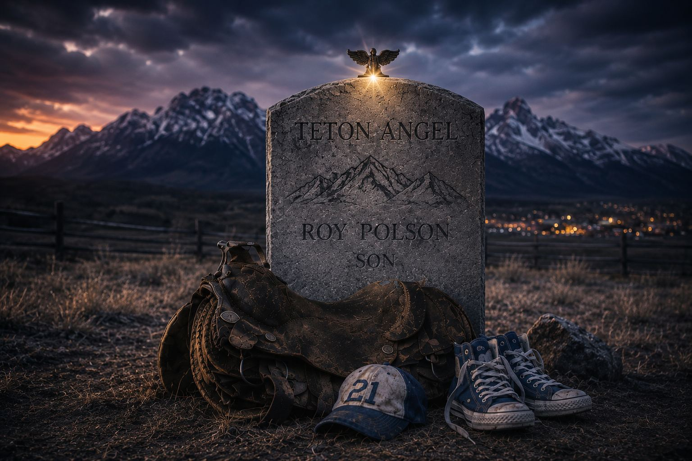

Most novels don't take a quarter century to write. Most novelists don't spend that quarter century pulling calves, driving commercial trucks, and chasing work across state lines, either. Teton Angel: The Heart of the West Reborn took the long way home, and you can feel it on every page.
This is the story of how it got written.
Raised on the ranch
Roland Hunter grew up on a purebred livestock ranch, the kind of place where a calving season is measured in nights without sleep and the standard is set by the man at the head of the table. His father's was about as high as standards get: one hundred live purebred calves from one hundred cows, a season still counted as a 100% live birth rate even though one twin didn't make it. The ranch earned a photograph in a livestock magazine.
That kind of upbringing leaves a mark. It teaches you how weather comes over a ridge, how a heifer acts before she calves, how a good horse and a bad one feel different under the same saddle. It teaches you that a family's name is something you carry, not something you're handed.
Readers who pick up Teton Angel meet that world right away. When patriarch Conrad Robinson shows up late to his own sons' trail ride, it's because "the blonde heifer was calving" and he had to pull the bull calf. Nobody in the Robinson family needs that explained. Neither did the author.
"This is a land of dryland farming, where nature's cycles of abundance and hardship have shaped both the land and the people who call it home."
Four farms and a long way from home
As a grown man, Roland worked on four different purebred livestock farms. Then an economic downturn hit, and like a lot of men raised on the land, he went where the work was: other regions, other jobs, and, in his words, a search to find himself.
He never stopped wanting to go back. That longing for the western life, the mountains and the stock and the small towns where everyone knows your truck, is the heartbeat of the book. Conrad Robinson spends much of the novel aching for his scattered sons to come home to the Circle Bar Ranch. It isn't hard to guess where that ache came from.
A paragraph at a time
Around the year 2000, Roland started writing a novel. Not in a cabin, not on a sabbatical, but the way working people write: one paragraph and one line at a time, in whatever hours were left over.
The story grew the same way a herd does. A family of four brothers, each one different. A cranky gas-station feud in St. Anthony. A sheriff who "always walked the line between protector and provider." A rodeo kid named Roy Polson with more heart than sense. A trail ride into the Teton high country that would change all of their lives. And, at the center of it, a headstone that nobody in town can fully explain.

The accident that finished the book
Sometimes the thing that stops you is the thing that sets you free to finish.
Years into the manuscript, Roland was in an automobile accident that wasn't his fault. The injuries cost him his commercial license; the trucks that had carried him through the lean years were no longer an option. For a man who had worked with his hands his whole life, that could have been the end of the road.
Instead, during the recovery, he went back to the pages. The paragraphs written over two decades got shaped into chapters, then into a single story: fifty-six chapters across two states and fifteen years. What started as a setback became the season he finally completed a lifelong dream.
Everyone has a story within them. This is his.
Borrowed hearts
Teton Angel goes to some dark places. It deals with violence, with survival, with the choices a young woman faces after something terrible happens to her, and with the kind of grief that knocks a grown man to his knees in the middle of a rodeo arena. The author is the first to say he couldn't have written those scenes alone.
In the acknowledgments he thanks "all those who shared their emotions with me when I had no experiences of my own to draw from," and the people whose prayers helped him find words for feelings he didn't yet understand. Above all, he thanks his wife, "whose heart and soul are reflected in these pages." The book is dedicated to Jane.
That's the quiet engine underneath the whole novel. It's a western, yes: horses and high country and eight-second rides. But it's really a book about what people will do for each other when nobody's watching, and about a community that shows up.
Hold the line
The book opens with a short introduction that reads almost like a creed:
"In a small town, there is a line between right and wrong, good and evil, knowledge and innocence. When something bad happens, it always hits close to home."
It closes with three words: Hold the line. After twenty-five years, a ranch upbringing, four farms, a long time away and a highway accident, it's fair to say the author did exactly that.

Read Teton Angel
Faith, family, and a secret carved in stone. Available now on Amazon.
Get the book →